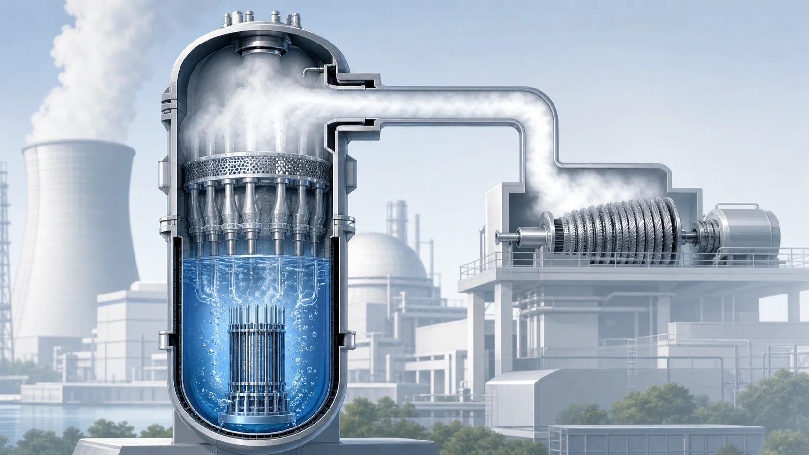
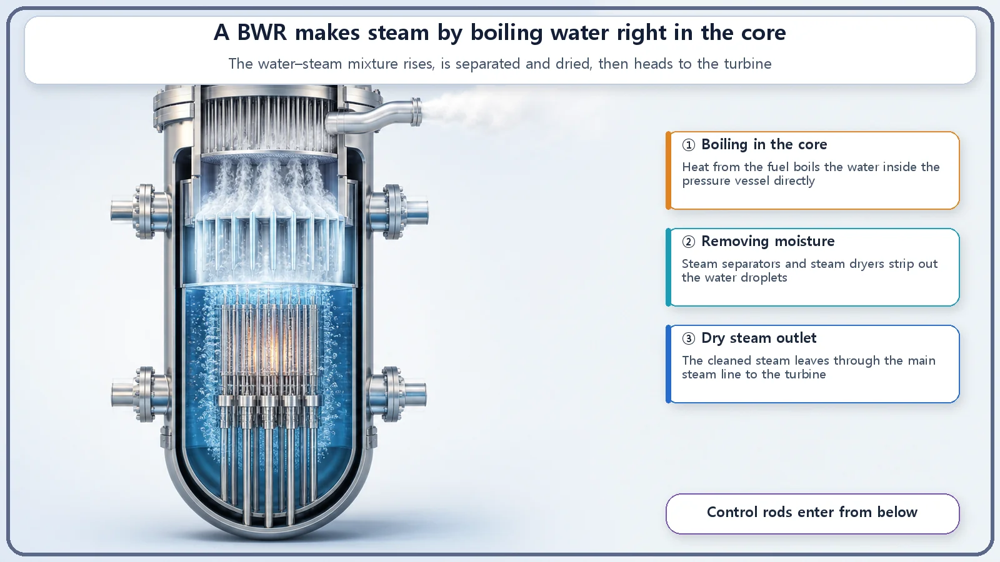
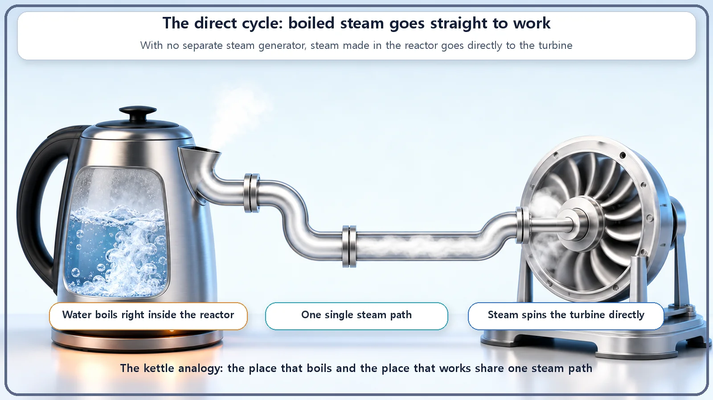

Reactor Types & Plant Systems · 177
Steam Straight from the Kettle to the Turbine — How a Boiling Water Reactor (BWR) Skips the Steam Generator
Like a kettle rather than a double boiler, a BWR boils its water right in the core and uses that steam directly, which changes its layout, pressure and even how its control rods move.

A boiling water reactor boils ordinary water right inside its pressure vessel and sends the steam straight to the turbine. There is no steam generator in between, so the plant is simpler and runs at lower pressure than a pressurized water reactor, at around 70 atmospheres.
There are basically two ways to heat water in a kitchen. You can put a kettle straight on the burner, or you can use a double boiler, where an inner bowl sits in a pan of boiling water and gets its heat second-hand. One is direct; the other goes through a middleman.
Surprisingly, nuclear power plants make steam in exactly these two ways too. Today's subject, the boiling water reactor (BWR), is the "boil it directly, like a kettle" kind.
Read the name and you're halfway there
The name comes in three pieces:
- Boiling: the water boils.
- Water: ordinary water, the kind we drink. Engineers call it "light water" only to distinguish it from heavy water; it really is just plain water.
- Reactor: the nuclear reactor.
Put them together and you get "a reactor that boils ordinary water," or BWR for short. The core idea is already in the name. Right in the middle of the reactor, in the core (the heart of the reactor where the fuel sits and fission makes heat), the water boils directly.

What happens inside one pressure vessel
The heart of a BWR is a single large steel pressure vessel. Let's follow what happens inside it from bottom to top.
At the bottom is the core, where fission produces plenty of heat. That heat warms the surrounding water until it starts to boil. Boiling means liquid water and steam bubbles mixed together, so above the core a bubbling blend of water and steam rises upward.
Sending steam in that state straight to the turbine would be a problem. "Wet steam" full of water droplets can strike the fast-spinning turbine blades and damage them. So the upper part of the pressure vessel holds two layers of equipment to strip out those droplets. First the steam separators use a swirling motion to fling the heavy droplets down, and then the steam dryers above them catch the last traces of moisture. Only this well-dried dry steam leaves through the steam line at the top of the vessel, heading straight for the turbine.
A fun detail: because the steam equipment occupies all the prime space at the top of the vessel, there is no room up there for the control rods that adjust the reactor's power. So a BWR's control rods do something unusual: they are pushed in from the bottom upward. They come up from the floor rather than down from the top.
What it means for the system to run as "one"
This is where the BWR's real personality shows. The steam boiled in the core goes to the turbine without passing through anything in between. The path taken by the heat-carrying steam is one continuous line. This is called the direct cycle.
The other widely used reactor type, the pressurized water reactor (PWR), is the double-boiler kind. A PWR squeezes the water circulating through its core under very high pressure so that it cannot boil, then sends that hot water to a large heat exchanger called the steam generator. There, across a wall, it boils a separate supply of water on the other side to make steam. The water that circulates through the core and the steam that goes to the turbine are kept in two separate systems so they never mix.
A BWR simply has no steam generator. The water is already boiled in the core, so there's no reason to go through a second step. That removes a big heat exchanger and its piping, and the design becomes that much simpler. This is the largest structural difference between a PWR and a BWR.
A second difference follows: pressure. A PWR must keep its water from boiling, so it runs at a very high pressure of more than about 150 atmospheres. A BWR intends to let the water boil, so it doesn't need to press that hard and runs at a lower pressure of around 70 atmospheres (roughly 7 MPa). At that pressure water boils at about 285–290°C, and that is the temperature at which a BWR boils its water. (These are widely quoted representative values, not the design figures of a specific plant.)

So why build it this way?
The simpler single system comes with something extra to look after. Because steam from the core goes straight to the turbine, during operation the turbine-side steam system briefly carries a very weak, very short-lived radioactivity. The main example is nitrogen-16, whose half-life is only about 7 seconds, so it disappears quickly once the reactor stops. During operation, though, shielding and management are designed in on the turbine and steam side as well. Rather than one design being better, it's more accurate to say the BWR simplifies the system and shifts part of what has to be managed to a different place.
One more thing about boiling: in a BWR it plays a quietly clever role. When more steam bubbles form in the core, there is that much less water acting as the moderator. Water slows down the fast neutrons released by fission so they can trigger the next fission. When bubbles thin the water out, that help weakens and the power is nudged down on its own. In other words, if the water tries to boil too hard, the boiling itself applies the brakes. It's interesting that boiling is not a mere side effect but a piece of physics built into the design.
Common points of confusion
First, "light water reactor" is the broad name for any reactor that uses ordinary water; it includes both the PWR and the BWR.
Second, the worry: "Water boiling inside a reactor? Isn't that dangerous?" In a BWR, boiling water in the core is not a fault or an accident; it is the normal state the reactor was designed for from the start. Where and how much the water boils is set by the design and managed within that range. What matters for safety is not "boiling itself" but "excessive boiling outside the design range."
Third, "no steam generator means nowhere to get rid of heat." Not so. A BWR also has a condenser that cools the steam leaving the turbine back into water, which returns to the pressure vessel to boil again. What it lacks is only the steam generator that separates core water from turbine steam.
Today's summary
- A BWR boils ordinary water directly inside its pressure vessel and sends the steam straight to the turbine (the "direct cycle"), so it has no steam generator and runs at a lower pressure than a PWR (around 70 atmospheres).
- Steam separators and dryers at the top of the vessel deliver dry steam; with no room above, the control rods go in from the bottom.
- The turbine side carries weak, short-lived radioactivity during operation and is shielded accordingly; boiling in the core acts as negative feedback on power.
- Boiling in a BWR is a normal design state, not an accident.
Boil it directly like a kettle, or second-hand like a double boiler: that one simple fork in the road changes a reactor's system layout, its operating pressure, and even the direction its control rods move.